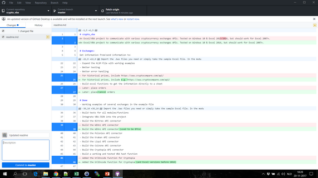

PUBLISHED before on: https://steemit.com/vba/@beeheap/excel-and-vba-development-with-github
What I have set up for my project:
I've been building quite a lot of excel tools in my life. Normally I save the excel file I am working on several times during development, using Save As. I use names like: CryptoTool_20171118a.xlsm, CryptoTool_20171118b.xlsm, etc. Some years ago I've worked on a start-up and discovered version control. So when I recently decided to build a VBA project to connect Excel to various bitcoin/cryptocurrency exchanges, I decided to go for a more professional approach: including version control and testing in my development process.
One side note: version control only works well for VBA code, not so much for logging changes in sheets, charts etc. Anyhow, since my project is mainly about code, I decided to give version control a try. I do save my master file ocasionally with the naming convention above.
So, version control... According to Wikipedia: Git is a version control system for tracking changes in computer files and coordinating work on those files among multiple people.
So Git basically 1) helps me tracking changes in your code and 2) gives me the ability to go back to earlier versions of that code. So I got myself an account at GitHub, and created a new project called crypto_vba. Step one was to create a readme.md file and make a small description of the project.
What I found hard about github is that git is basically command-line based. Although I grew up with MS DOS on the command line, I fancy a graphical interface. Luckily github has a desktop version: https://desktop.github.com/ . After downloading and installing that it's pretty easy to connect it to my online project and to add a local directory where I will be storing the files I want to have online.
After version control, a second building block for profesional development is testing. An extensive variety of this is Test driven development. That means: first write the test for a function, after which you can start building the function. I don't go that far for this project, but do include a test Sub at the top of every module.
I found a complication while building this, as I need to test my code with some private settings. In my case that's the exchange API keys. I don't want those to end up in my Github repository online. So what I do:
Public Const apikey_btce = "MP3YF9J3"And in the modules for the people who want to use it:
apikey = "your api key here"
'Remove this line, unless you define 2 constants somewhere ( Public Const apikey_btce = "the key to use everywhere" etc )
apikey = apikey_btceIn this way, tests pass and as long as you don't export your secret module, nobody will have the private settings.
So now you have a setup where you can work in the master file, test the code and want to export that code. For this I found various snippets online, the version I use is here: https://pastebin.com/Lhb6yupj. What this macro does:
So from the master you can export code, but still need to put it online. At that point, the Github desktop comes in. What the program does is basically show you the differences in the .bas files between the last version and the current version. Note: the program is looking at the exported files, not at the code inside your Excel file. After adding a short description of the update, it's simply pushing the "Commit to master" button and after that at the top "push".

So that's how it works for me, hope that this how-to inspires you to share your code. Feedback is welcome in the comments. If you want to go a step further, like importing & exporting VBA code, do check out this project: http://ramblings.mcpher.com/Home/excelquirks/vbagit/gettingstarted